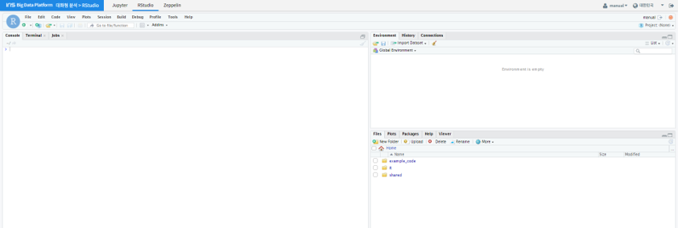
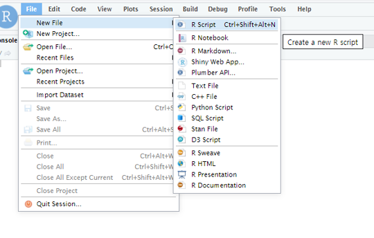
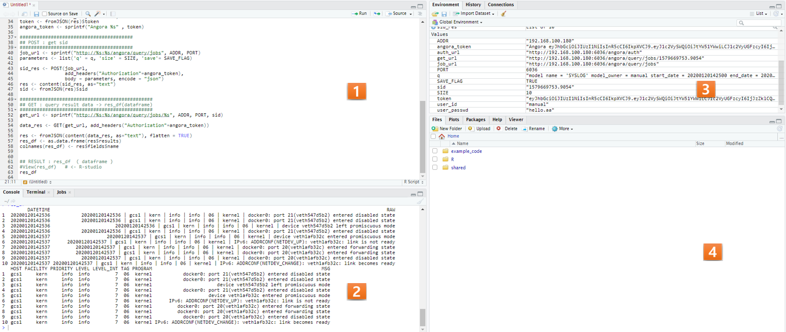

RStudio¶
개요¶
본 매뉴얼은 IRIS에서 직접 R 언어를 사용하는 방법에 대해 설명합니다.
RStudio 접속 방법¶
IRIS 대화형분석 > RStudio 로 이동하면 RStudio 메인 페이지로 접속할 수 있습니다.
RStudio 이용 방법¶
RStudio 상단의 File - New File - R Script 를 클릭하여 새 스크립트 파일을 생성합니다.
RStudio에서는 Run 수행 시 커서가 있는 위치의 1 라인이 실행됩니다. 전체 실행 시에는 스크립트 전체를 블록 지정하여 Run 또는 Ctrl + Enter 를 수행합니다.
| No | 블록명 | 설명 |
|---|---|---|
| 1 | Script | R 코드를 실행할 수 있는 스크립트 페이지입니다. |
| 2 | Console | 코드 실행 과정 및 결과를 확인할 수 있는 콘솔 페이지입니다. |
| 3 | Environment | 실행된 코드상의 변수명 및 저장된 테이블 샘플을 확인할 수 있는 환경 페이지입니다. |
| 4 | Files | 사용자가 원하는 로컬 파일을 R서버로 Import 하거나 코드 결과 생성된 파일을 로컬 환경으로 Export 할 수 있는 페이지입니다. |
IRIS-DB에서 데이터를 읽어오기¶
library(RJDBC)
.jinit()
.jaddClassPath("/docker/tools/Spark-on-IRIS/lib/java/mobigen-iris-jdbc-2.1.0.1.jar")
drv <- RJDBC::JDBC("com.mobigen.iris.jdbc.IRISDriver",
"/docker/tools/Spark-on-IRIS/lib/java/mobigen-iris-jdbc-2.1.0.1.jar",
identifier.quote="`")
# connection
conn <- RJDBC::dbConnect(drv, "jdbc:iris://192.168.100.180:5050/myuser", "myuser", "mypasswd")
# global table create
sql_s <- "CREATE TABLE myiris_global_iris8 (
irisid INTEGER,
sepal_length REAL,
sepal_width REAL,
petal_length REAL,
petal_width REAL,
species TEXT)
datascope GLOBAL
ramexpire 0
diskexpire 0
partitionkey None
partitiondate None
partitionrange 0 ; "
res <- dbSendUpdate(conn, sql_s)
# data insert
ins_sql <- sprintf( "INSERT INTO myiris_global_iris8 (irisid, sepal_length,sepal_width, petal_length,petal_width, species) VALUES (1, 1.0, 2.0, 3.0, 4.0, 'test') ; ")
dbSendUpdate(conn, ins_sql)
# data select
result <- dbGetQuery(conn, 'select count(*) from myiris_global_iris8;')
print(result)